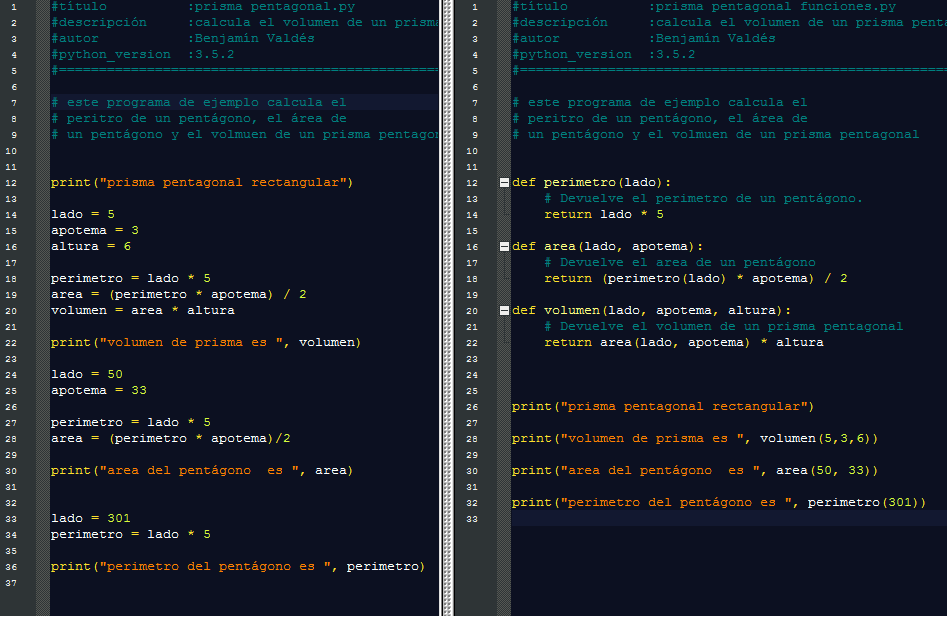

Actividad: Autoestudio sobre funciones.
info_outline Autoestudio sobre funciones.
Realizarás el autoestudio que presenta los conceptos de funciones.
check Objetivos de aprendizaje
- Conocer los conceptos de función, variable global y local.
- Reconocer la importancia del uso de funciones para el diseño de un programa.
list Instrucciones
-
Estudia los siguientes conceptos, haz notas y contesta las preguntas en tu libreta. Te recomendamos el uso de las siguientes fuentes:
Fernandez, A. Python 3: Al Descubierto Alfaomega, 2013, ISBN 978-607-707-718-3
Temas / conceptos:
- Funciones pag. 55
- Paso de parámetros pag. 56
- Valores por defecto y nombre de Parámetros pag. 58
- Casos de prueba Gracias Prof. Yolanda! :)
-
Responde las siguientes preguntas:
1. Cambia el siguiente código para que esté en una función y se mande a llamar desde un script. La funcion debe recibir el radio y devolver el area, la impresión debe de hacerse desde donde se manda a llamar la función.
PI = 3.1415 radio = float(input('porfavor dame el area')) area = radio * radio * PI print("el area es", area)2. Observa el siguiente ejemplo de como se separar un programa en diferentes funciones:
Usando estos documento como referencia prisma pentagonal.py y prisma pentagonal funciones.py . separa el siguiente programa script.py en funciones. Incluye las funciones en tus notas
3. ¿Cómo se relacionan las funciones con el diseño del algoritmo de un programa?
4. ¿Qué criterios usarías para decidir cuando un código debe de ir en una función separada?
5. Los siguientes son ejemplos de un casos de prueba ejemplos casos de prueba . Haz 3 casos de prueba una de las funciones que realizaste en la pregunta anterior. Incluye las funciones en tus notas
6. En una breve oración o diagrama explica en qué funciones separarías tu proyecto: ¿Cómo sería más facil de hacer pruebas y debug? ¿Qué partes podrías reutilizar?
attachmentRecursos
offline_pin Especificaciones de entrega
Las preguntas se revisarán en su libreta al inicio de la clase.